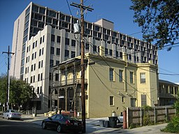

My Accomplishments
Assistant Nurse

As an experienced assistant nurse at the inner-city Jackson medical clinic based in Greenwood, I have served countless patients with life-threatening conditions. Developing connections with the individuals I served, I have been able to build close relationships and fond memories. Although my career at the clinic has consisted of numerous positive interactions, I have encountered stressful situations. Juggling “. . . walk-ins, bleeders, drunks, screamers, weepers, and hallucinators,” I have had my fair case of experience in the work field (Latham 108). Dealing with calls after calls, learning each time from the one prior, my fast learning skills allowed me to prosper even more. One of my patients, Arvin, a homeless black man, later died after being struck by a car driven by an angry racist. It was me who had been hit by the car at first, but Arvin was kind enough to try and assist me. The experience taught me about who our patients are, and what inspires us to continue. My medical skills are an important facet of my character, and my experiences with Arvin and at the clinic show how hard-working and dedicated I am to helping others.
This past Summer, I was startled by a decades-old dead body found underneath our family’s guest house. As construction workers were renovating the area, their voices abruptly stopped, beginning to leave once stumbling upon the carcass. Having overheard “Huesos viejos. Policía. Asesinato,” my knowledge of Spanish was enough for me to step out of my room, and discover the corpse (Latham 7). Using a wallet and a receipt to a victrola shop I found in the deceased’s pockets and the little knowledge I had of the race riots of 1921, I was able to piece together answers leading to even more questions. Delving deeper into the history of our town and how our family came to own our house, my best friend James and I began to uncover the ugliness of segregation and racial inequality in Tulsa - both in the past and right now. Our pursuit shows my persistence and grit, an essential part of my skill set.
Study of our past
My Passion

After my experience with Arvin, a controversial court case related to his death resulted in a mass of news coverage concerning me. The racist driver was being accused by multitudes of people for his actions. Arvin’s death also drove me to combat the racial inequality that was so prevalent in our society - and still is. Since then, advocating against racial inequality and prejudice has become my passion.